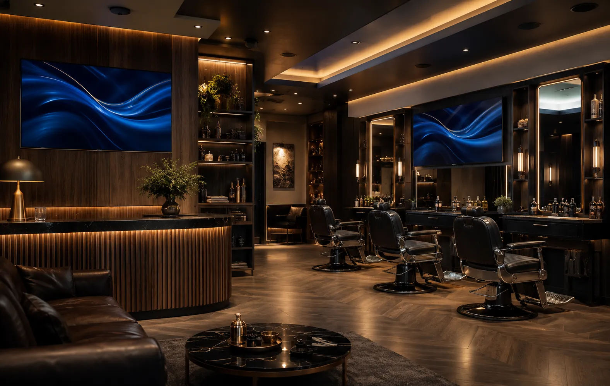
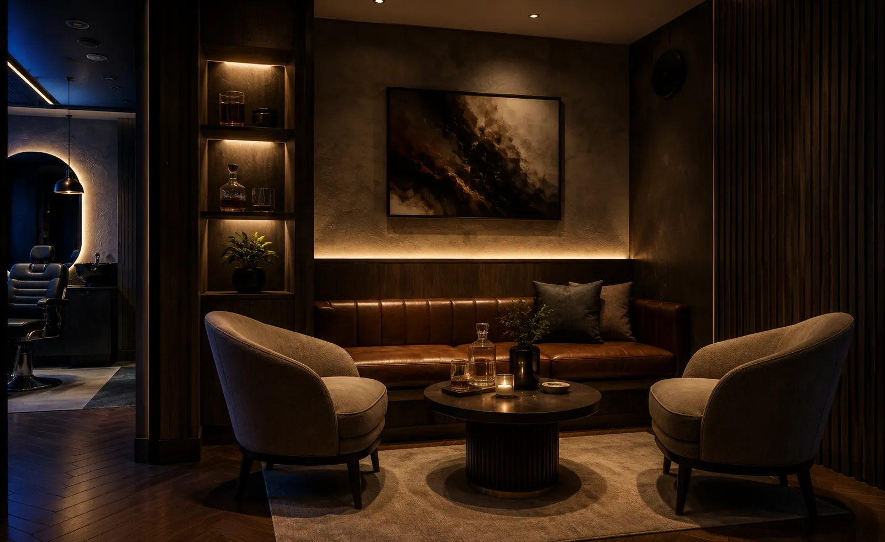
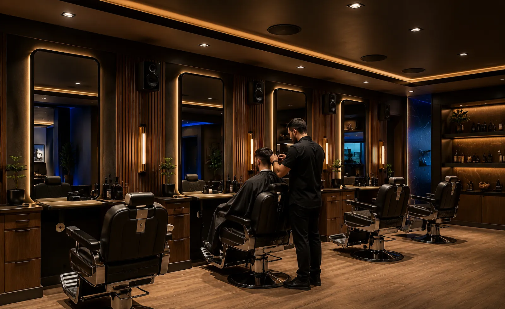
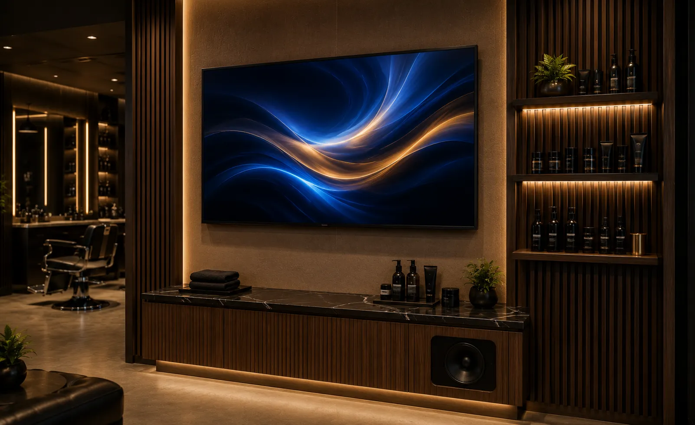
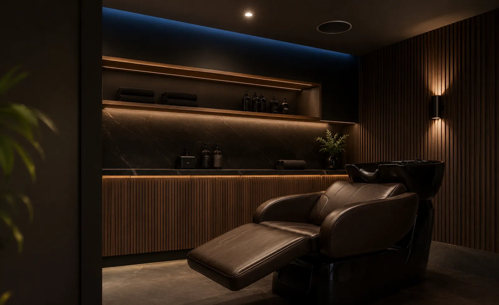
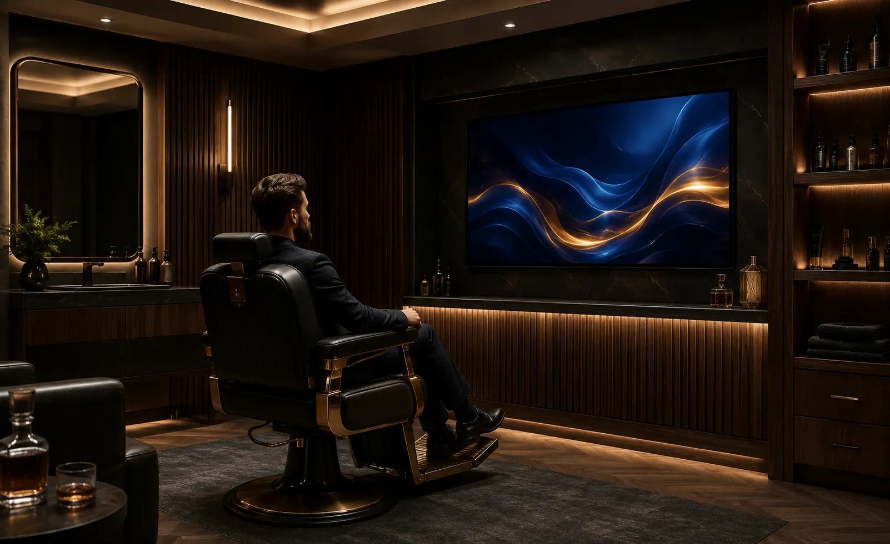

Audio y video para barberías: música ambiental, pantallas y control por zonas.
Diseñamos e instalamos música ambiental, audio por zonas, bocinas,
amplificación, pantallas y control para barberías y barber shops.
Consideramos
dimensiones, altura de montaje, distribución de estaciones, ruido ambiental, cobertura,
operación diaria y equipos existentes para definir una solución adecuada al espacio.
La música, el ambiente y la imagen visual ayudan a que tu barbería se sienta diferente.
Una barbería no solo ofrece un corte o arreglo de barba: ofrece una experiencia. El cliente entra, espera, conversa, observa el espacio y percibe el estilo de la marca. El audio y el video pueden reforzar esa identidad de forma elegante y profesional.
Con una solución bien diseñada, la música se escucha con presencia sin invadir la conversación, las pantallas comunican servicios o promociones y la tecnología se integra al diseño del local sin verse improvisada.
Ambiente con estilo
Música que acompaña la experiencia y refuerza la personalidad de la barbería.
Operación sencilla
El sistema se diseña para que el personal pueda usarlo fácilmente.
Mejor experiencia
El cliente percibe un espacio más moderno, cómodo y profesional.
Estética limpia
Bocinas, pantallas y cableado integrados de forma discreta y ordenada.
Un sistema improvisado puede hacer que la barbería se sienta ruidosa, desordenada o poco profesional.
En muchos espacios se intenta cubrir todo con una bocina demasiado fuerte en una sola zona. Esto provoca áreas con volumen excesivo, otras sin claridad, música molesta para conversar, cables visibles o equipos difíciles de operar.
El reto no es solamente comprar bocinas o amplificadores por separado. Un sistema de audio distribuido requiere definir cobertura, cantidad y ubicación de altavoces, potencia, zonas, control, cableado y configuración para que la operación diaria sea sencilla.
Volumen molesto
La música debe tener presencia, pero permitir conversación cómoda con el cliente.
Zonas de trabajo
Las estaciones de corte y espera pueden requerir niveles de audio distintos.
Pantallas sin impacto
Una pantalla mal ubicada no comunica promociones ni mejora la experiencia.
Cables visibles
La estética del local se afecta cuando el equipo se instala sin planeación.
Una barbería mejor ambientada, comunicada y lista para operar.
La solución puede adaptarse al tamaño de tu local, número de estaciones, flujo de clientes y estilo de marca. No se trata solo de comprar bocinas o pantallas: se trata de integrar una experiencia funcional para tu negocio.
Audio ambiental distribuido
Música con cobertura uniforme en recepción, sala de espera, estaciones de corte, lavado y otras áreas del local.
Audio por zonas
Volumen independiente por áreas cuando la operación de la barbería requiere niveles distintos entre recepción, corte, lavado o zona VIP.
Bocinas de plafón o muro
Seleccionamos formato, cobertura y ubicación de los altavoces según la arquitectura, altura y distribución del local.
Pantallas y contenido visual
Pantallas para servicios, promociones, productos, contenido de marca o entretenimiento, con ubicación y conectividad definidas para el espacio.
Amplificación y fuentes
Amplificación dimensionada para la carga del sistema y fuentes de reproducción compatibles con las necesidades de operación del negocio.
Control, cableado y puesta a punto
Configuración, cableado, pruebas y controles para que el personal pueda operar las funciones previstas con facilidad.
Comunica servicios, promociones y estilo sin perder la estética del local.
Una pantalla bien ubicada puede mostrar paquetes, servicios, productos de cuidado, promociones o contenido visual de la barbería. Combinada con música ambiental bien distribuida, ayuda a construir una experiencia más profesional y memorable.

Recepción
Sala de espera
Estaciones de corte
Servicios y promociones
Área de lavado
Área VIPUn proceso claro para una solución profesional
Un proceso estructurado para definir alcance, equipos, instalación, configuración y operación antes de poner el sistema en servicio.
Nos contactas
Nos escribes por WhatsApp y nos cuentas cómo es tu barbería.
Revisamos el local
Analizamos fotos, medidas, estaciones, recepción, sala de espera y estilo del lugar.
Definimos solución
Recomendamos bocinas, amplificación, pantallas, cableado, zonas y control.
Propuesta clara
Te entregamos alcance, equipos, tiempos e inversión.
Instalamos
Montaje, conexión, pruebas, configuración y puesta en marcha.
Te capacitamos
Explicamos el uso básico para que tu equipo pueda operar el sistema.
No se trata de colocar bocinas: se trata de diseñar el sistema para el espacio
Un sistema comercial bien planteado considera dimensiones, altura, cobertura, nivel esperado, ruido ambiental, zonas, potencia, cableado, fuentes y forma de operación del personal.
Nuestro enfoque es integrar audio, video y control de forma ordenada con la arquitectura de la barbería, buscando cobertura uniforme, operación sencilla y una instalación preparada para mantenimiento y posibles ampliaciones.
Una decisión profesional para tu negocio
- Asesoría personalizada y real
- Propuesta técnica formal y clara
- Equipos profesionales 100% originales
- Instalación estética y estructurada
- Integración armoniosa con el espacio
- Capacitación práctica de uso
- Acompañamiento técnico post-venta
Marcas profesionales para soluciones de alto rendimiento
Seleccionamos tecnología profesional según cobertura, potencia, compatibilidad, operación y presupuesto de cada proyecto.
Preguntas frecuentes sobre audio y video para barberías
Resolvemos tus dudas principales para ayudarte a planear e invertir con total tranquilidad y claridad técnica.
Diseñemos el audio y video de tu barbería
Completa el formulario y te contactamos por WhatsApp para revisar el espacio, el alcance y la información necesaria para preparar tu propuesta.
Hablemos de tu
barbería
Platícanos cómo es tu local, cuántas estaciones tiene y qué necesitas resolver. Podemos orientarte sobre música ambiental, zonas, bocinas, pantallas, control o actualización de un sistema existente.
Solicita asesoría para tu barbería
Completa el formulario y se abrirá WhatsApp con la información estructurada. Indica si buscas un sistema nuevo o una actualización y comparte medidas, zonas y equipos existentes cuando los conozcas.